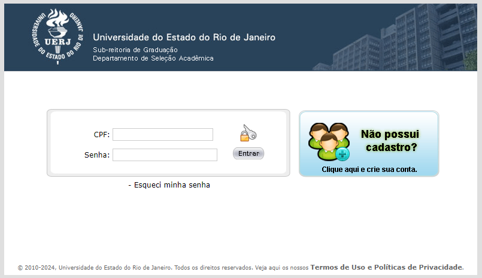

Tudo o que você precisa saber sobre o vestibular da Uerj
A universidade pioneira em inclusão social é uma dos mais concorridas do país. Confira as informações mais importantes sobre o processo seletivo, como formato das provas, conteúdos mais pedidos, obras obrigatórias, concorrência e calendário
A universidade pioneira em inclusão social é uma dos mais concorridas do país. Confira as informações mais importantes sobre o processo seletivo, como formato das provas, conteúdos mais pedidos, obras obrigatórias, concorrência e calendário
A Universidade do Estado do Rio de Janeiro (Uerj) é uma das melhores universidades do país, conhecida por sua forte atuação na pesquisa científica e tecnológica, com diversos grupos de pesquisa e laboratórios de ponta, o que possibilita a formação de profissionais altamente capacitados.
Segundo o Center for World University Rankings de 2022, estamos falando da 8ª melhor universidade brasileira. Além disso, ela é pioneira em inclusão social e racial. Foi a primeira universidade de todo o país a instituir política de cotas, em 2000 – 12 anos antes da Lei de Cotas nacional!
Até hoje, a Uerj é referência em políticas de inclusão: além da reserva de vagas, os estudantes têm acesso a programas como bolsa permanência, auxílio material didático, auxílio creche, auxílio alimentação, auxílio transporte e mais.
Anualmente, a Uerj oferece cerca de 6.500 vagas em 76 cursos distribuídos pela capital e as cidades de Duque de Caxias, São Gonçalo, Nova Friburgo, Petrópolis, Resende e Cabo Frio.
Como funciona o vestibular da Uerj?
Desde 2023, o vestibular da Uerj voltou a ser aplicado no modelo tradicional, com dois exames de qualificação e um exame discursivo. O Departamento de Seleção Acadêmica da UERJ (DSEA) informou que a mudança marca o retorno ao formato utilizado antes da pandemia da Covid-19.
Dessa maneira, o vestibular terá a seguinte configuração:
• Exame de Qualificação (EQ): provas que acontecem duas vezes por ano, sendo obrigatória a realização de pelo menos uma. São 60 questões objetivas, que abrangem as áreas de Linguagens, Matemática, Ciências da Natureza e Ciências Humanas.
• Exame Discursivo (ED):aplicado apenas uma vez ao ano aos aprovados no Exame de Qualificação. Nessa prova, o candidato deve fazer uma redação e duas provas específicas, de acordo com o curso escolhido na inscrição.
O Conteúdo Programático do Exame de Qualificação da Uerj 2025 já está disponível no site da Uerj, bem como as provas que vão constituir o exame discursivo e seus respectivos pesos, de acordo com o curso escolhido pelo candidato.
Como se inscrever no vestibular da Uerj?
As inscrições do vestibular da Uerj são realizadas exclusivamente online por meio do site do vestibular, em ambas as fases. Confira o passo a passo para realizar a inscrição:
1. Acesse o site do Vestibular Uerj (www.vestibular.uerj.br) e faça o login;
2. Caso não possua um cadastro na plataforma, é necessário cadastrar-se;
3. Após iniciar a sessão, clique no ícone de INSCRIÇÃO para começar o processo;
4. Preencha o requerimento de inscrição (informações pessoais e escolares);
5. Inclua os dados do questionário de informações socioculturais;
6. Confirme todas as informações fornecidas e finalize a inscrição;
7. Efetue o pagamento da taxa de inscrição dentro do prazo estabelecido;
8. Aguarde a confirmação da inscrição por e-mail e/ou pelo site da Uerj.